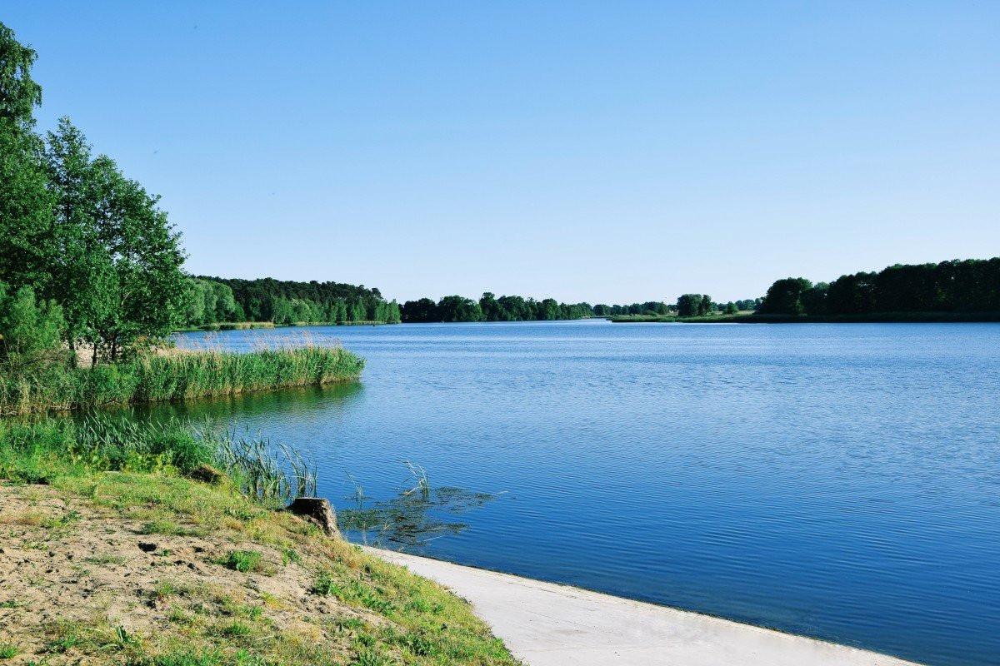

Безопасность на воде
Безопасность на воде в летний период
Одна из проблем купания - потеря чувства меры, хотя долгое пребывание в воде приводит к переохлаждению. Озноб и дрожь должны стать поводом немедленно выйти на берег и согреться, например, сделав небольшую энергичную пробежку. Продолжительность плавания зависит от температуры воды и воздуха, силы ветра. Оптимальные условия - ясная безветренная погода от +25°С и вода не ниже +18°С. Заходите в воду постепенно во избежание резкого перепада температур и спазма сосудов. Не спешите окунаться сразу после сильного перегрева: отойдите в тень, остыньте и только потом идите плавать. Не стоит купаться на голодный и полный желудок - лучше через полтора часа после приема пищи. Ни в коем случае не купайтесь в грозу! Совершая дальние заплывы, экономно расходуйте силы, время от времени останавливайтесь передохнуть на воде: лежа на спине или прижав колени и локти к груди и животу (поплавком). Не заплывайте далеко от берега на надувных матрацах и круга, особенно если навык плавания оставляет желать лучшего. В этом случае держитесь поближе к берегу, чтобы в любой момент коснуться дна ногами.
Безопасность на воде в зимний период
Несоблюдение правил безопасности на водных объектах в зимний период часто становится причиной гибели и травматизма людей. Первый лёд до наступления устойчивых морозов непрочен. Скреплённый вечерним или ночным холодом, он ещё способен выдерживать небольшую нагрузку, но днём, быстро нагреваясь от просачивающейся талой воды, становится пористым и очень слабым, хотя и сохраняет толщину. Основным условием безопасного пребывания человека на льду является соответствие толщины льда прилагаемой нагрузке. Безопасная толщина льда:
- для одного человека – не менее 7 см;
- для сооружения катка – не менее 12 см;
- для совершения пешей переправы – не менее 15 см;
- для проезда автомобилей – не менее 30 см.
Если вы вдруг провалились под лед то, время безопасного пребывания человека в воде: при температуре воды 5-15°С – от 3,5 до 4,5 часов; температура воды 2-3°С оказывается смертельной для человека через 10-15 мин; при температуре воды минус 2°С – смерть может наступить через 5-8 мин.
Правила поведения на льду:
- 1. Нельзя выходить на лед в тёмное время суток и при плохой видимости (туман, снегопад, дождь).
- 2. При переходе через реку пользуйтесь ледовыми переправами.
- 3. Нельзя проверять прочность льда ударом ноги. Если после первого сильного удара поленом или лыжной палкой покажется хоть немного воды, — это означает, что лёд тонкий, по нему ходить нельзя. В этом случае следует немедленно отойти по собственным следам к берегу, скользящими шагами, не отрывая ног ото льда и расставив их на ширину плеч, чтобы нагрузка распределялась на большую площадь. Точно так же поступают при предостерегающем потрескивании льда и образовании в нем трещин.
- 4. При вынужденном переходе водоёма безопаснее всего придерживаться троп или идти по уже проложенной лыжне. Но если их нет, то перед спуском на лёд нужно внимательно осмотреться и наметить предстоящий маршрут.
- 5. При переходе водоёма группой необходимо соблюдать расстояние друг от друга (5-6 м).
- 6. Замёрзшую реку (озеро) лучше перейти на лыжах, при этом крепления лыж расстегните, чтобы при необходимости быстро их сбросить; лыжные палки держите в руках, не накидывая петли на кисти рук, чтобы в случае опасности сразу их отбросить.
- 7. Если есть рюкзак, повесьте его на одно плечо, это позволит легко освободиться от груза в случае, если лёд под вами провалится.
- 8. На замёрзший водоём необходимо брать с собой прочный шнур длиной 20–25 метров с большой глухой петлёй на конце и грузом. Груз поможет забросить шнур к провалившемуся в воду товарищу; петля нужна для того, чтобы пострадавший мог надёжнее держаться, продев её подмышками.
- 9. Не стоит отпускать детей на лёд (на рыбалку, катание на лыжах и коньках) без присмотра.
- 10. Нахождение на льду в состоянии алкогольного опьянения категорически запрещено.